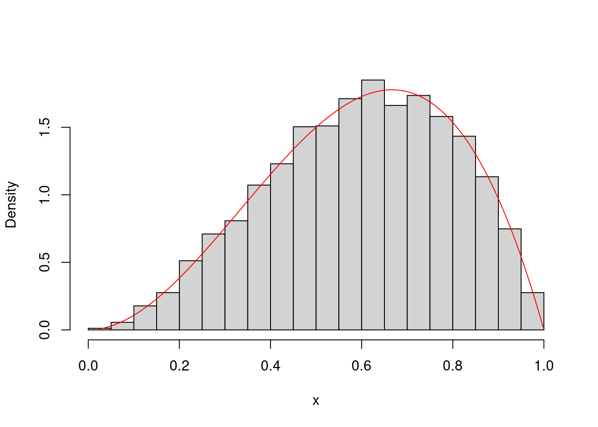
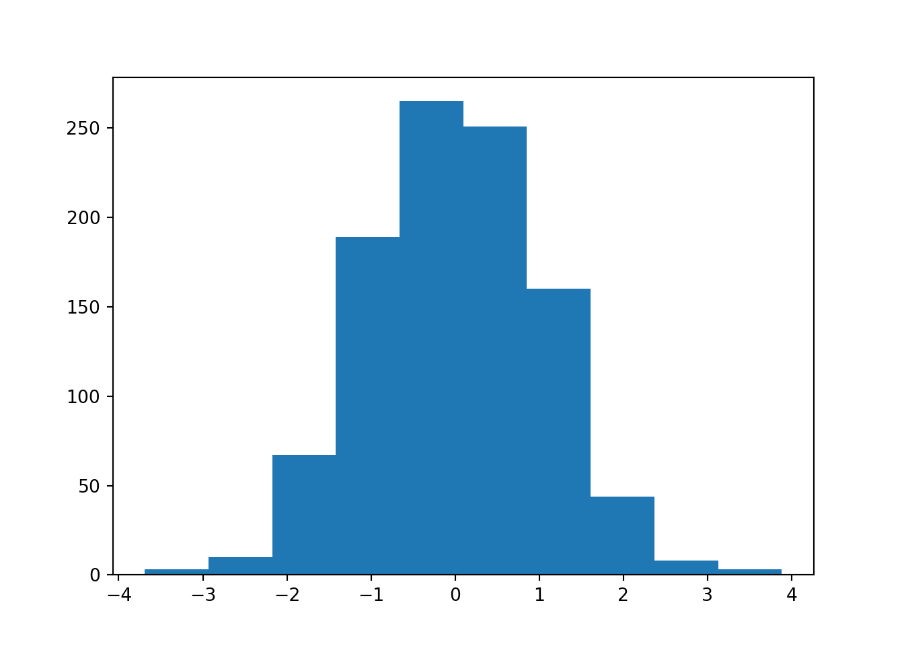
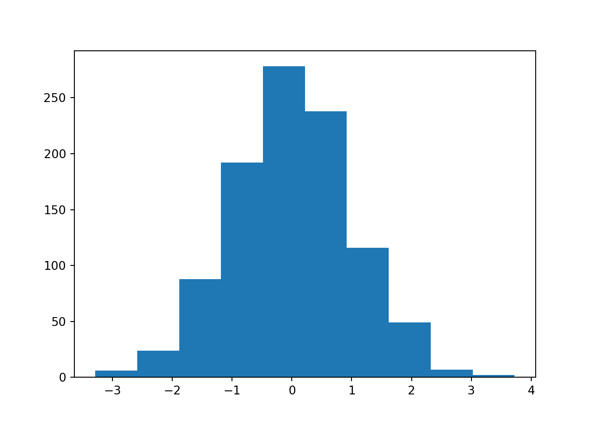
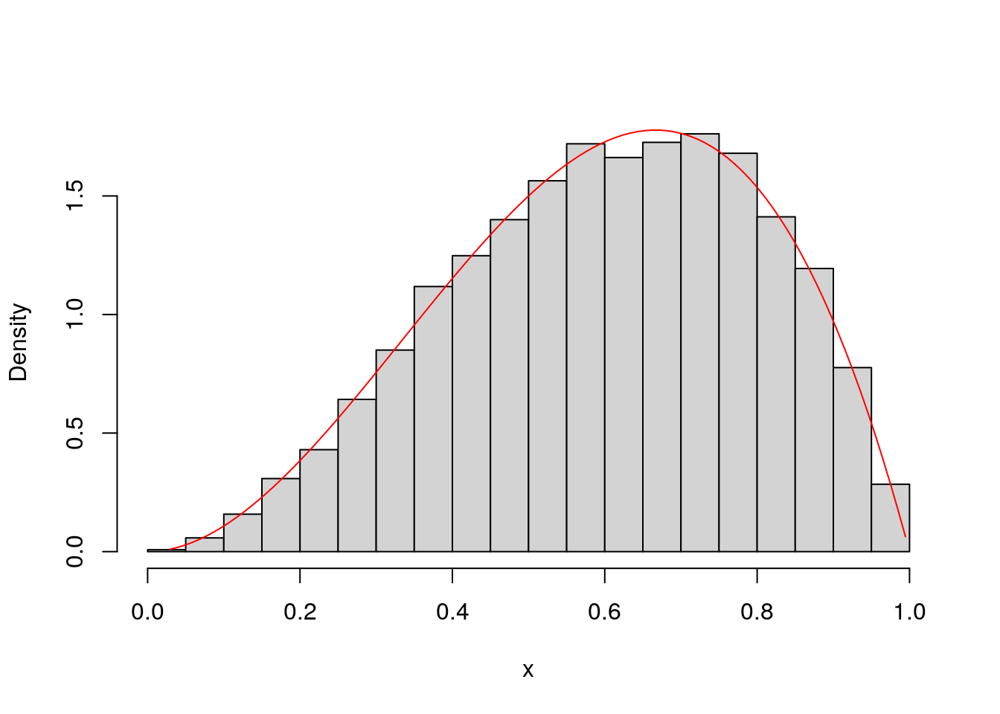
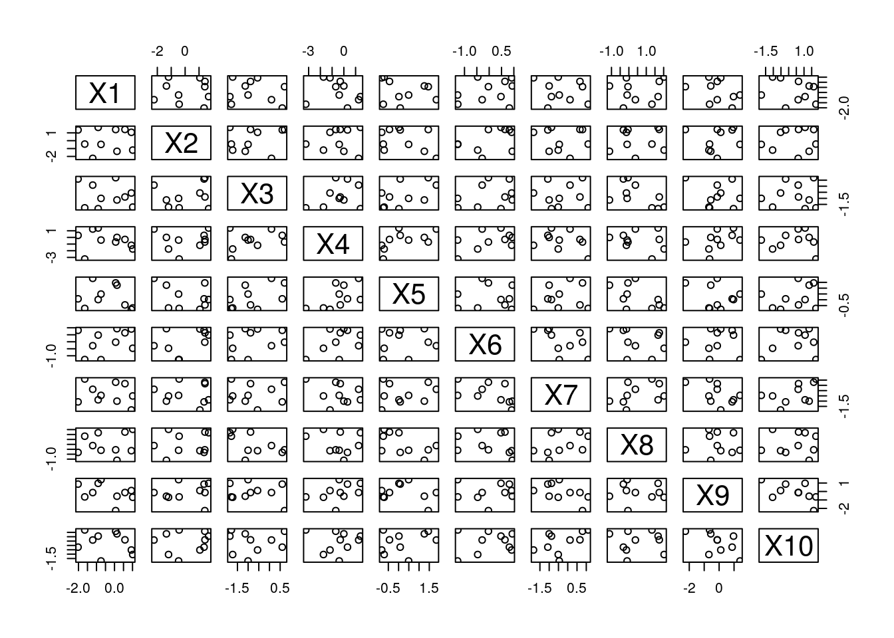
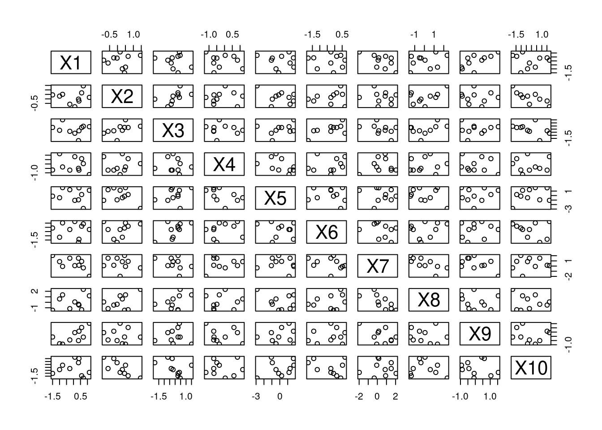
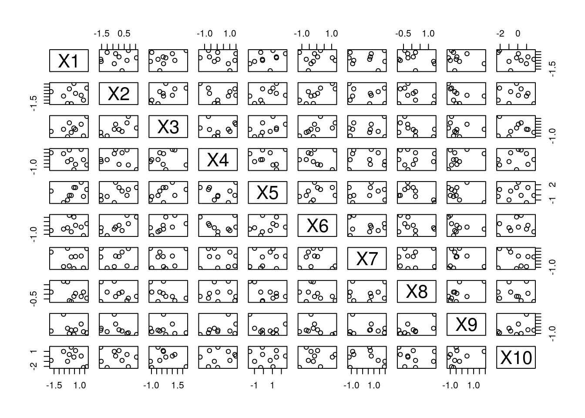
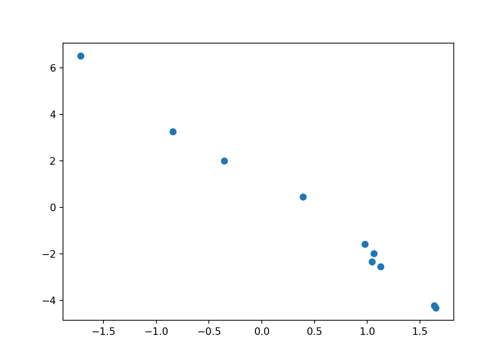

Chapter 13 Visualization
I describe a few plotting paradigms in R and Python below. Note that these descriptions are extremely thin. More depth could easily turn any of these subsections into an entire textbook!
13.1 Base R Plotting
R comes with some built-in functions plot, hist, boxplot, etc. Many of these reside in package:graphics, which comes pre-loaded into the search path. plot on the other hand, is higher up the search path in package:base–it is a generic method whose methods might be in package:graphics or some place else.
Base plotting covers most needs, so that’s what we spend most time with. However, there are a large number of third-party libraries for plotting that you might consider looking into if you want to follow a certain aesthetic, or if you want plotting specialized for certain cases (e.g. geospatial plots).
Recall our Albemarle Real Estate data set.
df <- read.csv("data/albemarle_real_estate.csv")
head(df)
## YearBuilt YearRemodeled Condition NumStories FinSqFt Bedroom FullBath HalfBath TotalRooms LotSize TotalValue
## 1 2006 0 Average 1.00 1922 3 3 0 10 5.000 409900
## 2 2003 0 Average 1.00 1848 3 2 0 7 61.189 523100
## 3 1972 0 Average 1.00 1248 2 1 0 4 1.760 180900
## 4 1998 0 Good 1.00 1244 1 1 0 3 50.648 620700
## 5 1886 0 Average 1.86 1861 4 1 0 6 3.880 162500
## 6 1910 0 Fair 1.53 1108 3 1 0 6 8.838 167200
## City
## 1 CROZET
## 2 CROZET
## 3 EARLYSVILLE
## 4 CROZET
## 5 CROZET
## 6 CROZETIf we wanted to get a general idea of how expensive homes were in Albemarle County, we could use a histogram. This helps us visualize a univariate numerical variable/column. Below I plot the (natural) logarithm of home prices.
hist(log(df$TotalValue),
xlab = "natural logarithm of home price", main = "Super-Duper Plot!")
I specified the xlab= and main= arguments, but there are many more that could be tweaked. Make sure to skim the options in the documentation (?hist).
plot is useful for plotting two univariate numerical variables. This can be done in time series plots (variable versus time) and scatter plots (one variable versus another).
par(mfrow=c(1,2))
plot(df$TotalValue, df$LotSize,
xlab = "total value ($)", ylab = "lot size (sq. ft.)",
pch = 3, col = "red", type = "b")
plot(log(df$TotalValue), log(df$LotSize),
xlab = "log. total value", ylab = "log. lot size",
pch = 2, col = "blue", type = "p")
abline(h = log(mean(df$LotSize)), col = "green")
par(mfrow=c(1,1))I use some of the many arguments available (type ?plot). xlab= and ylab= specify the x- and y-axis labels, respectively. col= is short for “color.” pch= is short for “point character.” Changing this will change the symbol shapes used for each point. type= is more general than that, but it is related. I typically use it to specify whether or not I want the points connected with lines.
I also use a couple other functions. abline is used to superimpose lines over the top of a plot. They can be horizontal, vertical, or you can specify them in slope-intercept form, or by providing a linear model object. I also used par to set a graphical parameter. The graphical parameter par()$mfrow sets the layout of a multiple plot visualization. I then set it back to the standard \(1 \times 1\) layout afterwards.
13.2 Plotting with ggplot2
ggplot2 is a popular third-party visualization package for R. There are also libraries in Python (e.g. plotnine) that look and feel quite similar. This subsection provides a short tutorial on how to use ggplot2 in R, and it is primarily based off of the material provided in (Wickham 2016). An online version of this text is provided here.
ggplot2 code looks a lot different than the code in the above section13. There, we would write a series of function calls, and each would change some state in the current figure. Here, we call different ggplot2 functions that create S3 objects with special behavior (more information about S3 objects in subsection 17.2.2), and then we “add” (i.e. we use the + operator) them together.
This new design is not to encourage you to think about S3 object-oriented systems. Rather, it is to get you thinking about making visualizations using the “grammar of graphics” (Wilkinson 2005). ggplot2 makes use of its own specialized vocabulary that is taken from this book. As we get started, I will try to introduce some of this vocabulary slowly.
The core function is the ggplot function. This is the function that figures are initialized with; it is the function that will take in information about which data set you want to plot, and how you want to plot it. The raw data is provided in the first argument. The second argument, mapping=, is more confusing. The argument should be constructed with the aes function. In the parlance of ggplot2, aes constructs an aesthetic mapping. Think of the “aesthetic mapping” as stored information that can be used later on–it “maps” data to visual properties of a figure.
Consider this first example.
library(ggplot2)
ggplot(mpg, aes(x = displ, y = hwy))
You’ll notice a few things about the code and the result produced:
No geometric shapes show up!
A Cartesian coordinate system is displayed, and the x-axis and y-axis were created based on aesthetic mapping provided (confirm this by typing
summary(mpg$displ)andsummary(mpg$hwy)).The axis labels are taken from the column names provided to
aes.
To plot geometric shapes (geoms in the parlance of ggplot2), we need to add layers to it. “Layers” is quite a broad term–it does not only apply to geometric objects. In fact, in ggplot2, a layer can be pretty much anything: raw data, summarized data, transformed data, annotations, etc. However, the functions that add geometric object layers usually start with the prefix geom_. In RStudio, after loading ggplot2, type geom_, and then press <Tab> (autocomplete) to see some of the options.
Consider the function geom_point. It too returns an S3 instance that has specialized behavior. In the parlance of ggplot2, it adds a scatterplot layer to the figure.
library(ggplot2)
ggplot(mpg, aes(x = displ, y = hwy)) +
geom_point()
Notice that we did not need to provide any arguments to geom_point. The aesthetic mappings were used by the new layer.
There are many types of layers that you can add to a plot, and you’re not limited to any number of them in a given plot. For example, if we wanted to add a title, we could use the ggtitle function to add a title layer. Unlike geom_point, this function will need to take an argument because the desired title is not stored as an aesthetic mapping.
ggplot(mpg, aes(x = displ, y = hwy)) +
geom_point() +
ggtitle("my favorite scatterplot")
Additionally, notice that the same layer will behave much differently if we change the aesthetic mapping.
ggplot(mpg, aes(x = displ, y = hwy, color = manufacturer)) +
geom_point() +
ggtitle("my favorite scatterplot")
If we want tighter control on the aesthetic mapping, we can use scales. Syntactically, these are things we “add” (+) to the figure, just like layers. However, these scales are constructed with a different set of functions, many of which start with the prefix scale_.
We can change attributes of the axes like this.
base_plot <- ggplot(mpg, aes(x = displ, y = hwy, color = manufacturer)) +
geom_point() +
ggtitle("my favorite scatterplot")
base_plot + scale_x_log10() + scale_y_reverse()
We can also change plot colors with scale layers. Let’s add an aesthetic called fill so we can use colors to denote the value of a numerical (not categorical) column. This data set doesn’t have any more unused numerical columns, so let’s create a new one called score. We also use a new geom layer from a function called geom_tile().
mpg$score <- 1/(mpg$displ^2 + mpg$hwy^2)
ggplot(mpg, aes(x = displ, y = hwy, fill = score )) +
geom_tile() 
If we didn’t like these colors, we could change them with a scale layer. Personally, I like this one.
mpg$score <- 1/(mpg$displ^2 + mpg$hwy^2)
ggplot(mpg, aes(x = displ, y = hwy, fill = score )) +
geom_tile() +
scale_fill_viridis_b()
There are many to choose from, though. Here’s another one.
mpg$score <- 1/(mpg$displ^2 + mpg$hwy^2)
ggplot(mpg, aes(x = displ, y = hwy, fill = score )) +
geom_tile() +
scale_fill_gradient2()
13.3 Plotting with Matplotlib
Matplotlib (Hunter 2007) is a third-party visualization library in Python. It’s the oldest and most heavily-used, so it’s the best way to start making graphics in Python, in my humble opinion. It also comes installed with Anaconda. This short introduction borrows heavily from the myriad of tutorials on Matplotlib’s website. I will start off making a simple plot, and commenting on each line of code.
You can use either “pyplot-style” (e.g. plt.plot()) or “object-oriented-style” to make figures in Matplotlib. Even though using the first type is faster to make simple plots, I will only describe the second one. It is the recommended approach because it is more extensible. However, the first one resembles the syntax of MATLAB. If you’re familiar with MATLAB, you might consider learning a little about the first style, as well.
import matplotlib.pyplot as plt # 1
import numpy as np # 2
fig, ax = plt.subplots() # 3
ax.hist(np.random.normal(size=1000)) # 4
## (array([ 7., 24., 71., 193., 236., 203., 144., 86., 29., 7.]), array([-2.92905803, -2.3296376 , -1.73021717, -1.13079673, -0.5313763 ,
## 0.06804413, 0.66746457, 1.266885 , 1.86630543, 2.46572587,
## 3.0651463 ]), <a list of 10 Patch objects>)
In the first line, we import the pyplot submodule of matplotlib. We rename it to plt, which is short, and will save us some typing. It also follows the most commonly-used convention.
Second, we import Numpy in the same way we always have. Matplotlib is written to work with Numpy arrays. If you want to plot some data, and it isn’t in a Numpy array, you should convert it first.
Third, we call the subplots function, and use sequence unpacking to unpack the returned container into individual objects without storing the overall container. “Subplots” sounds like it will make many different plots all on one figure, but if you look at the documentation the number of rows and columns defaults to one and one, respectively.
plt.subplots returns a tuple14 of two things: a Figure object, and one or more Axes object(s). These two classes will require some explanation.
A
Figureobject is the overall visualization object you’re making. It holds onto all of the plot elements. If you want to save all of your progress (e.g. withfig.savefig('my_picture.png')), you’re saving the overallFigureobject.One or more
Axesobjects are contained in aFigureobject. Each is “what you think of as ‘a plot’.” They hold onto twoAxisobjects (in the case of 2-dimensional plots) or three (in the case of 3-dimensional arguments). We are usually calling the methods of these objects to effect changes on a plot.
In line four, we call the hist() method of the Axes object called ax. There are many more plots available than plain histograms. Each one has its own method, and you can peruse the options in the documentation.
If you want to make figures more elaborate, just keep calling different methods of ax. If you want to fit more subplots to the same figure, add more Axes objects. Here is an example using some code from one of the official Matplotlib tutorials.
x = np.linspace(0, 2*np.pi, 100) # x values grid shared by both subplots
# create two subplots...one row two columns
fig, myAxes = plt.subplots(1, 2) # kind of like par(mfrow=c(1,2)) in R
# first subplot
myAxes[0].plot(x, x, label='linear') # Plot some data on the axes.
## [<matplotlib.lines.Line2D object at 0x7f5aded1a8d0>]
myAxes[0].plot(x, x**2, label='quadratic') # Plot more data on the axes...
## [<matplotlib.lines.Line2D object at 0x7f5aded1ac50>]
myAxes[0].plot(x, x**3, label='cubic') # ... and some more.
## [<matplotlib.lines.Line2D object at 0x7f5aded1afd0>]
myAxes[0].set_xlabel('x label') # Add an x-label to the axes.
## Text(0.5, 0, 'x label')
myAxes[0].set_ylabel('y label') # Add a y-label to the axes.
## Text(0, 0.5, 'y label')
myAxes[0].set_title("Simple Plot") # Add a title to the axes.
## Text(0.5, 1.0, 'Simple Plot')
myAxes[0].legend() # Add a legend.
# second subplot
## <matplotlib.legend.Legend object at 0x7f5aded56cf8>
myAxes[1].plot(x,np.sin(x), label='sine wave')
## [<matplotlib.lines.Line2D object at 0x7f5adeca8630>]
myAxes[1].legend()

import numpy as np my_inputs = np.linspace(start = 0, stop = 2*np.pi) outputs = np.sin(my_inputs)
import matplotlib.pyplot as plt plt.plot(my_inputs, outputs)
very good! https://jakevdp.github.io/PythonDataScienceHandbook/04.12-three-dimensional-plotting.html
References
Personally, I find its syntax more confusing, and so I tend to prefer base graphics. However, it is popular at the moment, and so I do believe that it is important to mention here in this text.↩︎
We didn’t talk about
tuples in chapter 2, but you can think of them as being similar tolists. They are containers that can hold elements of different types. There are a few key differences, though: they are made with parentheses (e.g.('a')) instead of square brackets, and they are immutable instead of mutable.↩︎